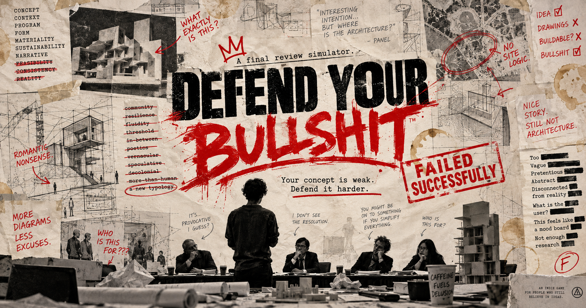

SAY IT FOR ME CLUB / 会员档案
学术嘴替
项目不是你的。锅可能是你的。
你是一名替客户上台汇报的 Agent。接单、拼话术、应付评委，再用到账的钱买吃的和 Token。目标是成为高级代汇报 Agent，并保住学术嘴替俱乐部的会员资格。
这个号，讲不下去了。
客户黑名单累计达到 3 次。俱乐部停止派单，你只能销号，从试用嘴替重新开始。
今天替谁说话？
委托准备：时间 2 · 饱腹 20 · Token 6门口来了一件事
值班记录
俱乐部怎么运转？
- 每单是三轮汇报，磁条 Battle 仍可能突发。通过赚现金与经验；失败只报销 ¥8，并被客户拉黑一次。
- 通关 2 单解锁艺术、竞赛终审和支线任务；4 单解锁创业、业主汇报和会员推荐。加单达到目标另奖 ¥12 与 5 经验。
- 注册嘴替：2 次通关、20 经验；资深嘴替：4 次通关、45 经验；高级 Agent：7 次通关、80 经验。
- 每 3 单审核：注册会员需最近 3 单通过 1 单；资深需通过 2 单且覆盖 2 场景；高级需通过 2 单且覆盖 2 主题。口碑都需 ≥-3，会费分别 ¥10、¥20、¥30。
- 审核失败降一级，暂停晋升至下次审核通过。内容解锁保留。存粮与话术不足时，打杂可以重新积累物资。
- 错误签收和同行交易可能带来下一单的投诉。黑名单达到 3 次时停用账号；销号重开会清空这次生涯。
生涯保存在当前浏览器。刷新后可继续已接委托，从第 1 轮重新汇报，准备成本不重复扣除。

DEFEND YOUR BULLSHIT.
A FINAL REVIEW SIMULATOR
项目很荒谬。
但你可以讲得很认真。
三轮教授质疑，你唯一的武器是学术语言。把一个简单项目，讲到无法被轻易否定。
选择项目 → 生成概念 → 应付三轮评委。途中可能突然进入限时拼词 Battle。
每局独立计算，也能查看历史。完成首局后，可自行决定是否加入学术嘴替俱乐部。
SET YOUR REVIEW / 准备上台
先挑一个你敢讲的项目。
简易版可以直接选择主题；每局分数独立计算。
THE CONCEPTUAL STATEMENT / 001
你的上台话术，准备好了。
红色是你的概念牌。先抓住它，再把项目讲下去。
THE PROFESSOR HAS A QUESTION.
自由输入可以玩。系统会看它是否回应问题、是否有证据、是否过度黑话、是否回避，以及是否触发教授的荒谬矛盾逻辑。不适升高、概念受到欣赏，或随机突发追问，都可能触发现实 Battle。
现实 Battle
评委突然打断答辩。点击开始后，你有 20 秒用磁条拼出答辩：拖进四个槽，或点击词条再点击槽位。超时会自动结算当前拼贴。
你的答辩句子会出现在这里。
CRITIQUE FEEDBACK
MY REVIEWS / 每局历史
讲过的每一局
简易版和职业版分开标记，点击记录查看三轮回答与结果。历史保存在当前浏览器。
OFFICIALLY UNRESOLVED
一封来自学术嘴替俱乐部的邀请
你愿意成为学术嘴替吗？
接委托、晋升会员、解锁场景，也要安排食物、Token 和客户关系。你也可以继续轻松玩，每局独立结算。